犬連れで「BAYSIDE KANAYA（ベイサイド金谷）」宿泊記｜大型犬・小型犬で分かれたドッグランと海の目の前の部屋
千葉県富津市・金谷の「BAYSIDE KANAYA（ベイサイド金谷）」に、犬1匹と2人で泊まってきました。結論から言うと、犬連れにやさしい宿でした。大型犬と小型犬で分かれたドッグランがあって、バルコニーの目の前は海。夜は本格的なBBQコンロで伊勢海老やアワビを焼いて、ごはんが最高でした。実際に撮った写真と一緒に紹介します。
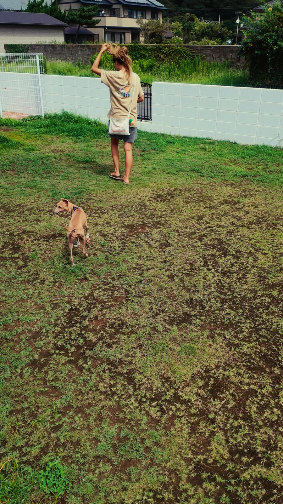
BAYSIDE KANAYA（ベイサイド金谷）｜千葉県富津市
楽天トラベルで空室・料金を見る →フェリーで行くのも楽しい
今回は東京湾フェリーで金谷へ。海の上を進むだけで、もう旅行気分が上がります。宿はフェリーを降りてすぐのエリアにあるので、車ごとフェリーに乗って行くのもおすすめです。
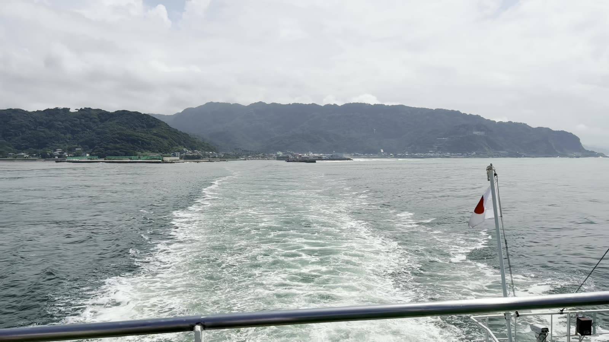
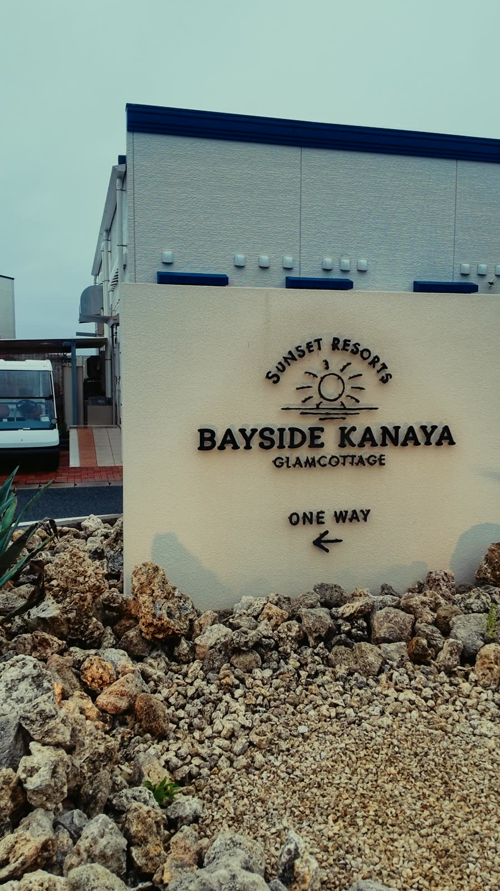
部屋のバルコニーの目の前が海
部屋は明るくて広め。大きな窓の外はすぐバルコニーで、その目の前が海です。ソファに座っているだけで海が見えるので、部屋でのんびりする時間が気持ちよかったです。
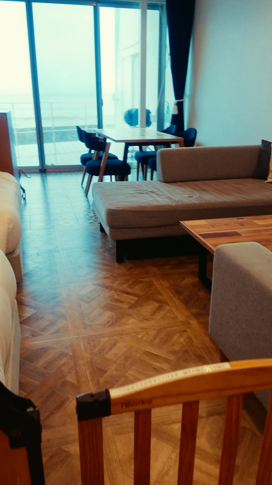
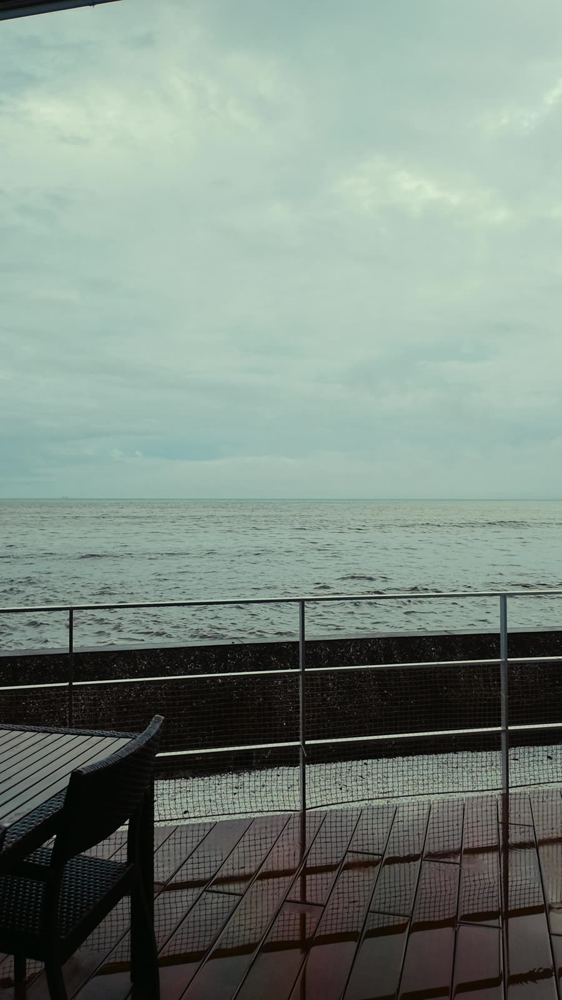
部屋に犬用のサークル
部屋には犬用のサークルや食器が用意されていました。犬のための準備がしっかりしているので、荷物を減らせるのもうれしいポイントです。
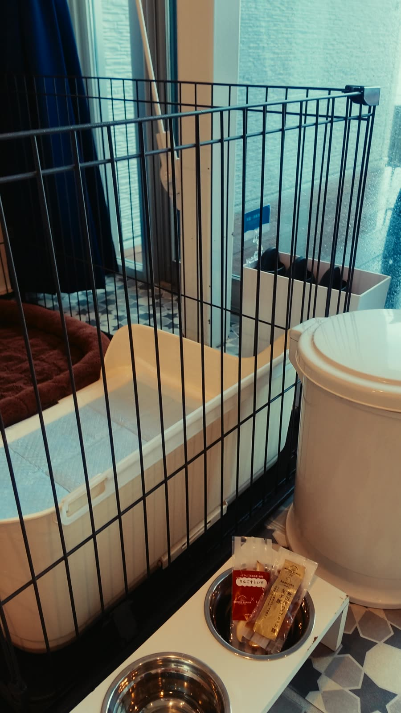
大型犬と小型犬で分かれたドッグラン
個人的に一番よかったのがドッグラン。芝生のドッグランが大型犬用と小型犬用に分かれているので、体の大きさが違う犬同士でも安心して遊ばせられます。スタッフさんも犬にやさしくて、犬連れでも気をつかわずに過ごせました。
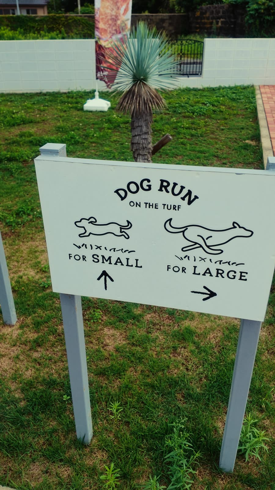
夜は本格BBQ。伊勢海老にアワビ
夕食は本格的なBBQコンロで焼くスタイル。伊勢海老、アワビ、ホタテ、大きなお肉まで並んで、見た目から豪華です。〆には魚介のうまみが出たスープまであって、最後まで最高でした。
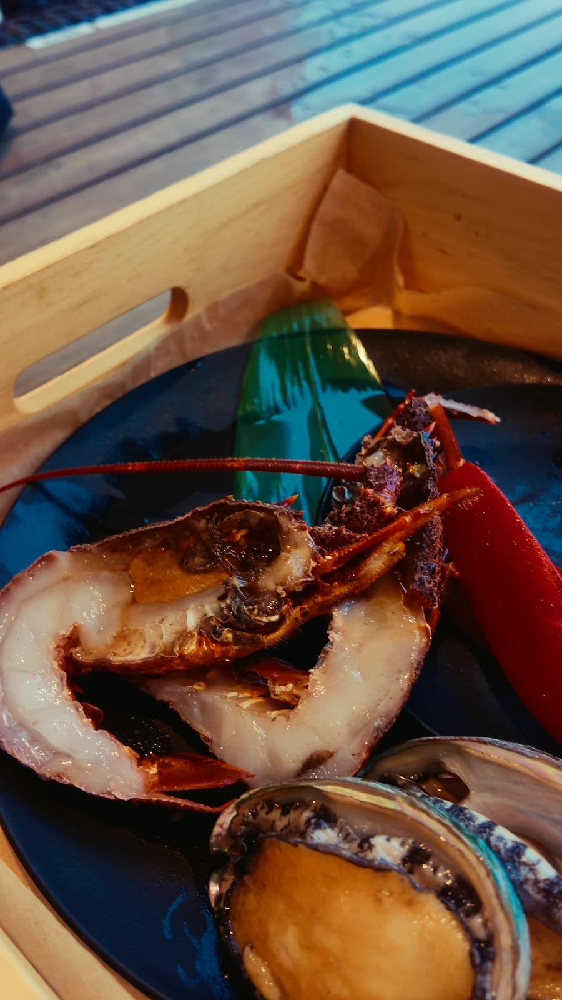
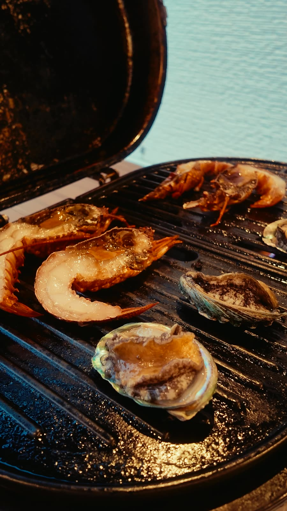
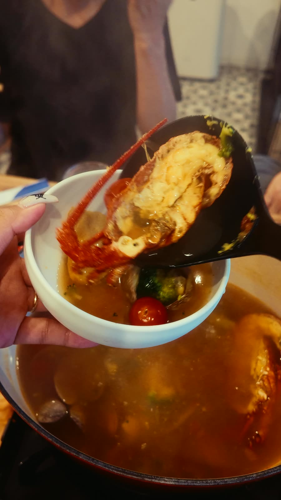
朝ごはんもBBQスタイル
朝ごはんもコンロで焼くスタイルで、ハムと目玉焼きを焼いて、サラダやサンドイッチと一緒にいただきました。
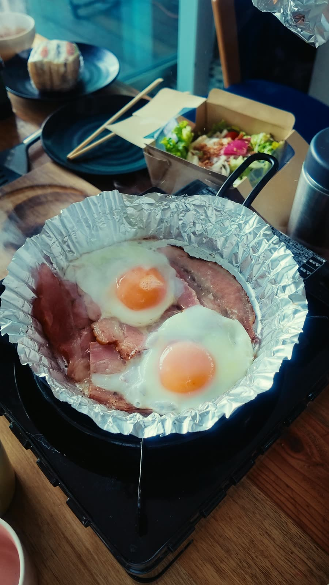
朝の海沿いを散歩
朝は晴れて、海が真っ青に。宿のまわりを犬と一緒に散歩するだけで気持ちいい朝でした。
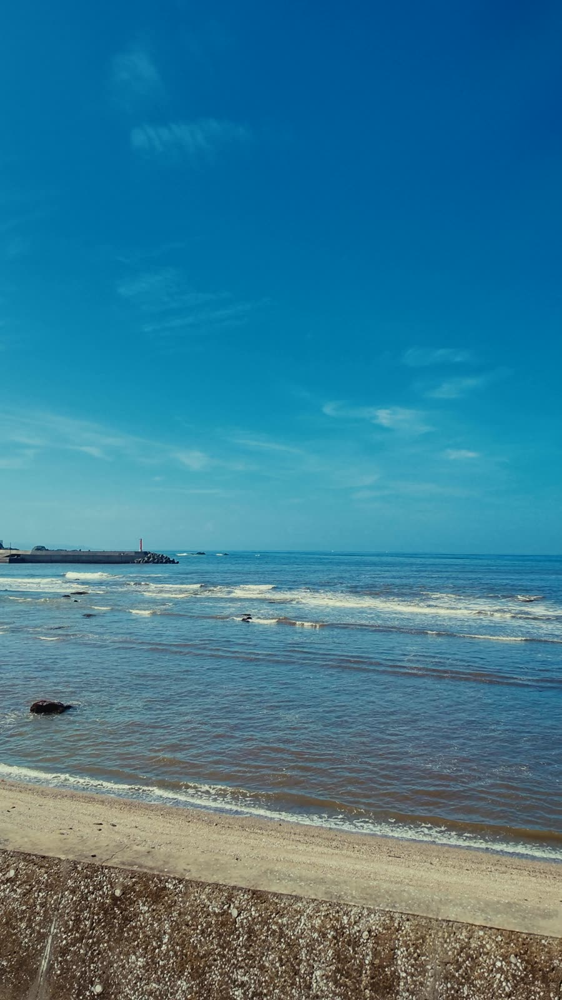
料金の目安と予約のときの注意
僕たちは9月に、2人と犬1匹で泊まって、だいたい5〜6万円くらいでした。料金は時期やプランで変わるので、予約ページで最新の金額を確認してください。
ペットと泊まれるのはペット可の部屋に限られていて、予約のときに犬の種類や数を伝える必要があります。犬のサイズや細かいルールは、予約前に宿に確認しておくと安心です。犬連れ旅行の持ち物は犬連れ1泊2日旅行の持ち物リストにまとめています。
こんな人におすすめ
犬と一緒に海の近くでのんびりしたい人、ごはんも妥協したくない人にぴったりの宿です。大型犬と小型犬のドッグランが分かれているので、大きめの犬と泊まりたい人にもおすすめです。
BAYSIDE KANAYA（ベイサイド金谷）｜千葉県富津市
楽天トラベルで空室・料金を見る →